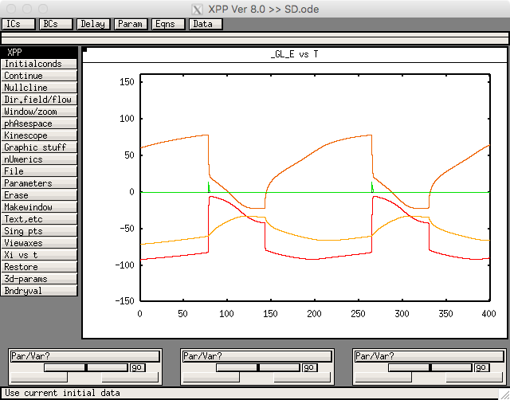

This is the readme for the AUTO models associated with the paper:
Hübel N, Hosseini-Zare MS, Žiburkus J, Ullah G (2017) The role of
glutamate in neuronal ion homeostasis: A case study of spreading
depolarization. PLoS Comput Biol 13:e1005804
http://dx.doi.org/10.1371/journal.pcbi.1005804
The model file was contributed by G Ullah, and requires XPP/AUTO which is freely available here:
http://www.math.pitt.edu/~bard/xpp/xpp.html
To run:
-------
On unix/linux start with a command like:
xppaut SD.ode
Click on Initialconds -> Go.
After a short time you should see the following graph similar to
figure 2a in the paper
